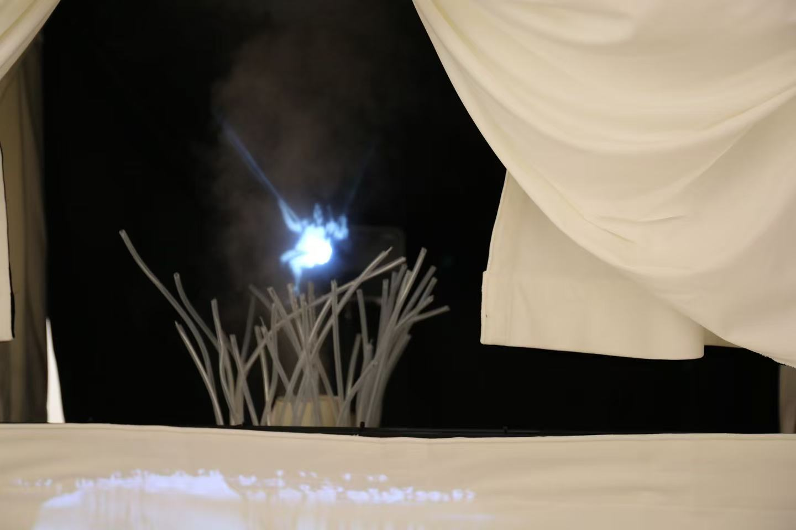

Discover how Julia transforms ideas into reality.
| Art Installation | Julia shared the process behind her undergraduate thesis project, an art installation. Her projects often begin because there is an assignment or requirement to make something, but the direction of the work develops gradually through the process rather than being completely planned from the beginning. |
|---|---|
| Starting Point | Her inspiration often comes from everyday life, especially her experiences and feelings around social interactions. She usually begins with a vague idea rather than a clear image of the final work, and allows the concept to become more specific as she works. |
| Emotion as the Core | Emotion is one of the most important parts of Julia’s process. She constantly asks whether the work can genuinely communicate the feeling she wants to express, and whether the audience can experience that emotion through the installation. |
| Materials and Environment | She chooses materials according to the emotion she wants to communicate. Materials such as fabric and metal can create very different physical and emotional qualities. She also prefers to work alone, because having private space helps her concentrate and develop the work in her own way. |
| Developing the Work | Julia often explores new techniques during the making process. Technology and unfamiliar methods can become part of the work, especially when they help make the installation more visually engaging or create a stronger experience for the audience. Her process is exploratory rather than following a fixed plan. |
| Changing Direction | Practical limitations also influence the project. Budget is one of the main reasons she might change an idea, material, or direction. The final work therefore develops through a negotiation between the original concept, emotional expression, technical possibilities, and what is realistically achievable. |
| When Is It Finished | For Julia, a project is often “finished” because a deadline arrives rather than because the idea can no longer develop. If she has new ideas after the deadline, or learns a new technique in the future, she may return to the project and continue developing it. |
| After Completion | Once the work is completed, she documents it for her portfolio and usually shares it with a small circle of friends. The finished installation can therefore remain part of an ongoing creative process rather than being a completely closed project. |